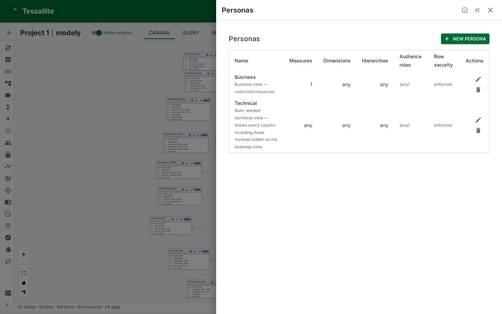
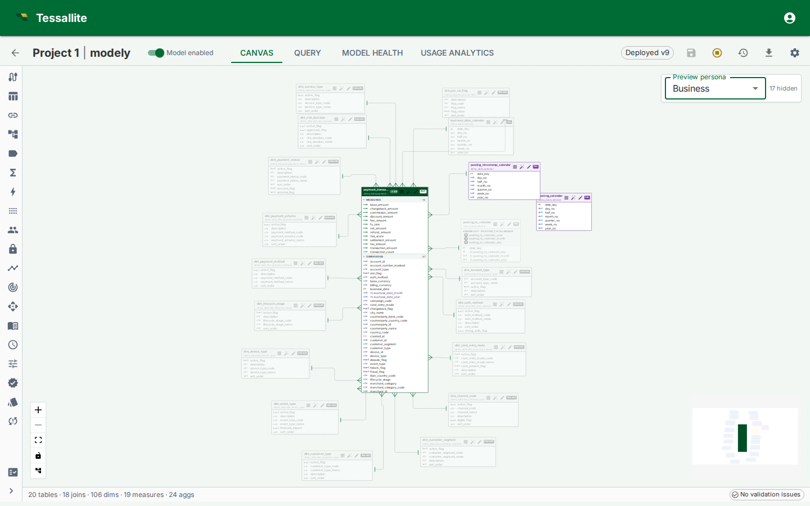

Configure Personas
What a persona is
A persona is a named subset of a model. It lists the measures, dimensions, and hierarchies that a given audience is allowed to query, and — optionally — a set of default filters that are merged into every query from that audience.
Row security decides which rows a caller sees. A persona decides which measures and dimensions they can even ask about. The two are orthogonal and compose: every rule from both layers fires on every query, in that order (persona first, then row security).
Use a persona when one model serves several audiences that should see different parts of the catalogue. Typical cases:
- Finance vs. Ops. Both share the same fact, but Finance needs the margin and EBITDA measures; Ops needs utilisation and throughput. A Finance persona includes the finance measures; an Ops persona includes the ops ones. Nobody copies the model.
- External partner feed. A partner can see shipment counts and dates but not margins, costs, or internal customer names. A
partnerpersona strips the sensitive measures and dimensions out of every query. - Compliance-sensitive pilot. A new calculated measure is under legal review. It lives in the model but is gated behind a
legal_reviewpersona until sign-off. Regular users never see it.
A model can carry any number of personas. Each is independent. They are never ORed together — a caller is tied to at most one persona, which is chosen by connecting to that persona's virtual catalog. The gateway emits one catalog per persona named <model.slug>_<persona.slug> alongside the base <model.slug> catalog. A seeded technical persona per model exposes every column (including hidden ones) as <model.slug>_technical, which is the classic modeller view. It is reserved for admins, modellers, and users granted the model_technical role (see "Audience roles and persona assignment" below).
The four fields
| Field | Meaning |
|---|---|
name | Human label. Shown in the picker. |
description | Optional free text. Shown as tooltip in the picker. |
included_measure_ids | Allow list of measure IDs. An empty list means no restriction — every measure is visible. A non-empty list means only those measures are visible. |
included_dimension_ids | Allow list of dimension IDs. Same empty-means-unrestricted rule. |
included_hierarchy_ids | Allow list of hierarchy IDs. Same rule. |
default_filters | A small dictionary of dimension_path → value (or dimension_path → {operator: value}) applied to every query unless the caller has authored their own filter on the same dimension. |
audience_roles | List of role names. A caller whose JWT carries one of these roles sees this persona listed in the picker. An empty list means "available to everyone" — except for personas that show hidden columns, which always need an explicit role match (see below). |
Empty allow lists are the default and the most common setting for personas that exist only to attach default filters. Non-empty lists switch that axis into restrictive mode.
Hierarchy and dimension interaction
Dimensions are governance concepts; hierarchies are presentation objects built from dimensions. When a persona restricts the dimension allow list, any hierarchy level that is backed by an excluded dimension is automatically hidden. If all levels of a hierarchy are hidden, the hierarchy itself disappears from the list.
This means you do not need to maintain both dimension and hierarchy allow lists in lockstep. Restricting dimensions cascades into hierarchies naturally. The hierarchy allow list is still useful for hiding entire hierarchies that are allowed by their dimensions but should not be shown to the audience.

Figure 1 — The Personas panel. Each row shows the persona's name, description, and a one-glance summary of its allow lists and default filters. The preview-on-canvas action opens the model canvas with this persona pre-selected as a dimmed overlay.
How the Router applies a persona
Every query — from the gateway, the plugin execution endpoint, or internal REST paths — runs through the persona gate before row security and before route selection. The gate runs this four-step procedure:
- Resolve the persona. For gateway queries, the catalog name determines the persona. For the Excel plugin, the
persona_idfield in the request body is used. Embedded users always use the persona set in their token. The server determines the effective persona — the client sends a request, but the server decides. - Check the allow lists. For each measure in the bound query, confirm its ID is in
included_measure_ids(or the list is empty). Same for each dimension and hierarchy. The first object that falls outside is rejected with the object kind and name in the error detail. - Merge default filters. Each
(dimension_path, value)pair indefault_filtersis added to the query'sWHERE— unless the caller has already authored their own filter on that dimension, in which case the user's filter wins. - Proceed to row security. The persona step does not touch the generated SQL beyond adding filters. Row-security then wraps the plan as usual, and the aggregate/pocket fast paths remain available if neither layer blocks them.
The gate runs the same logic for every read path — REST, XMLA, JDBC, Excel plugin, MCP — so swapping tool is not a way around it.
Advanced SQL is rejected for scoped personas. Some SQL shapes — subqueries, CTEs (WITH ...), UNION/set operations, window functions, and similar constructs — cannot be checked column-by-column against a persona's allow lists, default filters, or column restrictions. When the persona carries any of those controls, such a query is rejected with a clear 403 message instead of being run unchecked. Rewrite it as a plain SELECT over the model. Personas with no allow lists, no default filters, and no column restrictions (for example the technical persona) keep full SQL freedom.
Tip — hidden columns inside aggregate functions. The persona scope gate checks whether a column appears as a bare value in the SELECT list. Columns wrapped inside aggregate functions like SUM(), AVG(), or COUNT() are resolved as measure references, not as standalone columns. This means a hidden column such as fee_amount is rejected when written as SELECT fee_amount FROM ... but allowed when written as SELECT SUM(fee_amount) FROM .... The same applies to compound expressions like SELECT SUM(fee_amount) / SUM(base_amount) FROM ... — both hidden columns are inside aggregation functions and pass the gate. Hidden columns are also allowed in WHERE clauses. See Dimensions and Measures for details.
Default filters
default_filters is a small dictionary keyed by dimension name. Each value is either:
- A scalar, e.g.
"fiscal_year": 2026, which is converted todim = 2026. - A list, e.g.
"region": ["EMEA", "APAC"], which is converted todim IN (...). - A dict with a single operator key, e.g.
{"gte": 100}, which is converted todim >= 100. Supported operators:eq,neq,gt,gte,lt,lte,in,between,like,is_null,is_not_null.
Conflict rule: if the caller's query already has any filter on the same dimension, the persona's default is skipped. The user's filter wins. This lets a partner narrow a default filter without having their session collapse to zero rows because of a hidden default they cannot override.
Unknown operators are ignored silently; the rest of the dictionary still merges. This is deliberate — authoring errors should not block every query from an audience.
Canvas preview overlay
The model canvas has a Preview persona picker in the top-right corner (visible only when at least one persona exists). Selecting a persona:
- Dims every table whose measures, dimensions, or hierarchies all fall outside that persona's allow lists. Dimmed tables render at 35% opacity in greyscale.
- Dashes every join whose endpoints include a dimmed table.
- Suppresses clicks on dimmed tables and edges. The preview is read-only — the canvas does not change what the model is, only what the selected audience would see.
The overlay is the single best way to catch mistakes before publishing. Select each persona in turn and scan for "I didn't mean to hide that".

Figure 2 — Preview persona overlay. Dimmed tables and dashed joins show exactly what the selected audience cannot reach.
Audience roles and persona assignment
The audience_roles field on a persona controls which users are assigned to it. A user is assigned to a persona when their role appears in the persona's audience_roles list, or when the list is empty (available to everyone).
Exception — personas that show hidden columns. A persona with Includes hidden columns turned on (such as the seeded Technical persona) widens what a user can see, so it is never handed out to everyone. It is assigned only to users whose role explicitly appears in its audience_roles list. An empty audience list on such a persona assigns it to nobody (admins and modellers can still select it, because they can select any persona).
The technical persona and the model_technical role
Every model carries a seeded Technical persona that exposes every column, including hidden ones. It is gated behind the audience role model_technical:
- Admins and modellers can always pick the technical persona — no extra role needed.
- To give a regular user (for example a data engineer) the technical view, grant them the
model_technicalrole: in Tenant Admin → Users, set the user's role tomodel_technical, or — for SSO — map one of their IdP groups tomodel_technicalin Group Mappings. A user with this role is automatically locked to the technical persona on every model. - The
model_technicalrole grants no project permissions by itself. The user still needs a project access binding (viewer, modeler, or admin) to read or edit anything, exactly like amember. - For SSO users whose groups map to several roles, the highest project role (admin > modeler > viewer) wins over
model_technicalat first login. To make such a user a technical-view holder, set their role tomodel_technicaldirectly in user management afterwards.
How persona assignment affects what happens when a user queries:
| Situation | What happens |
|---|---|
| User is assigned to one persona | That persona is applied automatically — no selection needed. Selecting a different persona is not allowed. |
| User is assigned to more than one persona | The user must select one. Queries without a selection are not allowed. |
| User is not assigned to any persona | Everything in the model is available. The user may optionally select any persona as a voluntary filter. |
| Admin or modeller | Everything in the model is available. Any persona may be selected optionally. |
| Technical persona holder | The technical persona is applied automatically. Selecting a different persona is not allowed. |
| Embedded user with a persona set in the token | That persona is always applied. No other persona can be selected. |
The Query Panel, Measure Query Panel, and Excel plugin each show a Persona picker that lists the personas the user is assigned to. When only one is assigned, it is pre-selected. When none are assigned, the picker shows all available personas as optional filters.
External BI clients (Excel, Power BI, Tableau) pick a persona by connecting to its virtual catalog — the XMLA and JDBC catalog lists include one entry per persona (<model.slug>_<persona.slug>) alongside the base <model.slug> catalog.
The audience_roles list does not grant project access. A user still needs to be a member of the project to read the model. Persona assignment only controls which slice of the model catalogue the user sees.
Worked example — Finance, Ops, Partner
Context. One wholesale-orders model serves three audiences: the internal Finance team needs margin measures and access to every dimension; the internal Ops team needs utilisation and lead-time measures plus the operational dimensions; the external Partner integration can see shipment counts and dates but none of the cost or customer-identity columns.
Steps.
- Open the model in Model Builder → Personas.
- Click New. Fill in:
- Name:
Finance - Description:
Margin, EBITDA, cost variance — full dimension catalogue. - Measure allow list: select
revenue,cost,margin,ebitda. - Dimension allow list: leave empty (everything visible).
- Default filters:
{"fiscal_year": 2026}to scope to the current year by default. - Audience roles: add
finance_analyst.
- Repeat for
Ops— measuresutilisation,throughput,lead_time_days; dimension list empty; audienceops_manager. - Repeat for
Partner— measuresshipments_count,delivered_on_time_pct; dimension allow list excludescustomer.internal_id,customer.credit_score, and the margin-only dimensions; no default filter; audiencepartner_integration. - Select each persona in the Preview persona picker on the canvas and confirm that only the intended tables stay in colour.
- Issue a test query from the Query Panel as a
partner_integrationuser — the Persona picker should showPartner, and any attempt to reference a blocked measure should return a 403 with the measure name in the detail.
Interaction with row security
When both layers are configured:
- Persona runs first. If it denies the object, the query returns 403 before row security is touched.
- Persona default filters are added. These become part of the user's WHERE.
- Row security wraps the plan. The wrap intersects with the persona defaults — the caller sees rows that satisfy both.
- Fast paths are disabled only if row security fires. A persona that only trims the catalogue and adds a default filter does not disable aggregates or pockets; a row-security rule does.
In practice: personas are cheap, row security is expensive. Use a persona first to trim the catalogue; add row security only when row-level filtering is also needed.
Bypass row security (Phase 8.C.1)
A persona carries a Bypass row security flag. When enabled:
- The Router skips the row-security wrap for any query bound to this persona.
- The allow list and audience-role gating still run. Per-connection binding still applies.
- Aggregate and pocket fast paths are re-enabled (they are normally disabled whenever a row-security rule fires).
- Every bypassed execution is tagged with
persona_bypass_row_security=truein the structured request log for audit. There is no dedicated audit table; existing request logs are the audit surface.
Use this only for internal dashboards that are already scoped through persona allow lists and that need the performance of the aggregate/pocket layer. A red warning appears in the editor while bypass is on, and saving with bypass newly enabled requires an explicit confirmation.
Per-persona aggregates and pockets (Phase 8.C.2 scaffolding)
Aggregates and pockets carry a nullable persona_id:
- NULL (global) — serves any query, with or without a persona bound.
- Populated — serves only queries bound to the same persona.
When a query is bound to persona X (through the catalog name), the router prefers a matching aggregate or pocket scoped to X over a global one of the same grain. This makes persona-specific workloads (e.g. a partner feed that only ever filters on a narrow slice) a first-class tuning target: the optimizer can build aggregates that are tight to that slice without poisoning global queries with a too-narrow cache.
query_logs and query_miss_logs now carry persona_id as well, so the optimizer can partition its workload scan when building candidates. The matcher precedence rule ships in v1; the optimizer-side scoping that populates per-persona aggregates ships in a follow-on slice.
v1 limitations
| Limitation | Impact | Workaround |
|---|---|---|
| Empty allow list means "no restriction". | An editor who intends "nothing is allowed" must explicitly list every object they want hidden, or author the persona as an include list for the single measure that is allowed. | Treat the empty-list case as documentation only. Use non-empty lists to express scope. |
| Default filters match on dimension name, not ID. | Renaming a dimension breaks every default filter that references it. | Keep a team-wide convention for dimension names; audit default_filters when renaming. |
| Audience-role matching is union-based. | A user carrying multiple roles sees every persona that any of their roles advertises. | Keep role strings narrow; avoid multi-audience superuser JWTs. |
| Per-connection binding ships via catalog name. | Each persona is a separate virtual catalog (<model.slug>_<persona.slug>). External BI tools (Excel, Power BI, JDBC clients) pick a persona by connecting to the matching catalog, not by sending a header. | Point each audience's connection string at the persona catalog intended for it. |
No UI for default_filters yet. | The panel shows the dictionary; edits happen through the JSON field or the API. | A full editor ships in Phase 8.B.8+. |
Troubleshooting
| Symptom | Likely cause | Fix |
|---|---|---|
| Persona picker is empty for a user who should see one | JWT has no role in the persona's audience_roles | Add the role, or edit the persona's audience list. For a hidden-columns persona an empty audience list assigns nobody — add an explicit role |
Query returns PERSONA_COMPLEX_SQL_NOT_ALLOWED | The query uses subqueries, CTEs, set operations, window functions, or similar constructs under a persona with allow lists or default filters | Rewrite the query as a plain SELECT over the model, or run it under an unscoped persona |
| Regular user cannot reach the technical persona | The user does not carry the model_technical role | Set the user's role to model_technical in user management (or via an SSO group mapping) |
Query returns PERSONA_OBJECT_NOT_INCLUDED unexpectedly | A measure/dimension is not in the allow list, but the audience needs it | Add the object's ID to the list, or remove the list to make that axis unrestricted |
| Default filter does not fire | The caller already has a filter on that dimension | Expected — user-authored filters win. Remove the user filter or change the default's scope |
404 PERSONA_NOT_FOUND on every query | The request body carries a persona_id that belongs to another model, or the persona was deleted | Check the ID; the router checks persona.model_id == request.model_id |
| Persona catalog missing from Excel's database list | Caller's JWT roles do not intersect the persona's audience_roles, and the caller is not an admin or modeller | Add the caller's role to audience_roles, or grant admin/modeller to allow impersonation |
| Canvas preview shows every table dimmed | The persona's allow lists are non-empty but the model's measure/dim IDs do not match | Re-select measures and dimensions from the canvas-side picker; IDs changed |